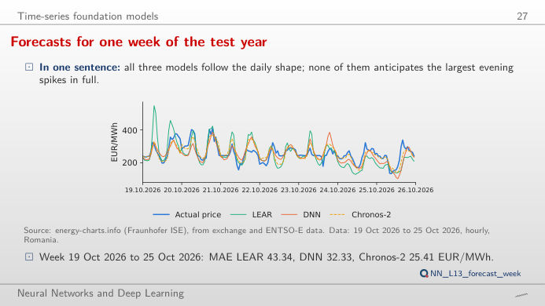
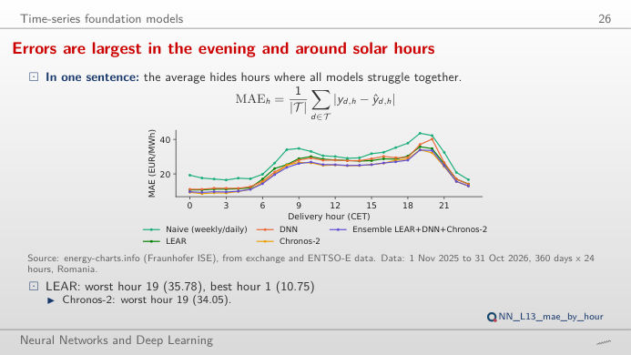
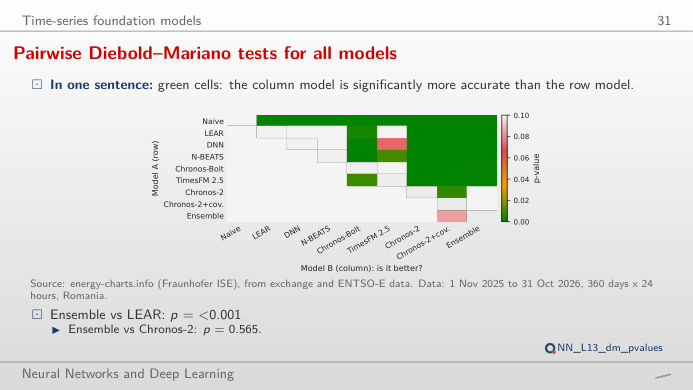
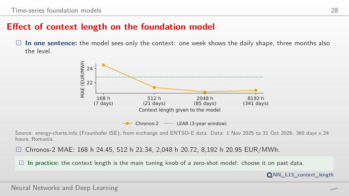
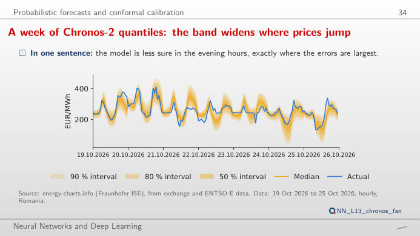
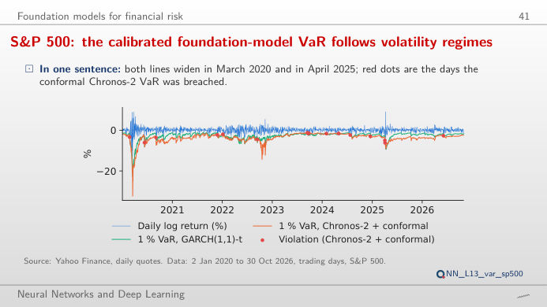

The slide of the lecture is on the left, the same figure on the right, recomputed in your browser from the forecasts of the lecture when you move a control. The forecasts are those of the test year, 1 November 2025 to 31 October 2026 (360 days with all 24 hours and every model available): naive rule, LEAR (Lasso-estimated autoregressive model), DNN (deep neural network with 24 outputs), N-BEATS (neural basis expansion analysis) and the foundation models Chronos-2, Chronos-Bolt and TimesFM (Time-series Foundation Model), used zero-shot, i.e. without any training on our data. The ▶ button moves the main parameter step by step. Under each figure: a readout, a question for the room and the Quantlet with the code of the chart.
Day-ahead price forecasts for Romania · Is one forecast really better? · Foundation models: context and quantiles · Value-at-Risk with a foundation model
Day-ahead price forecasts for Romania
Forecasts for one week of the test year

Answer
Chronos-2, with a mean absolute error (MAE) of 25.41 EUR/MWh, against 32.33 EUR/MWh for the DNN and 43.34 EUR/MWh for LEAR (lecture numbers). Over the whole test year the ranking is the same at the top: Chronos-2 with covariates 20.41, Chronos-2 20.72, LEAR 22.79, DNN 23.06 EUR/MWh. Move the week: every model gets the level right and smooths the evening spikes; the weeks with the largest errors are those with price jumps that no model saw coming.
Errors are largest in the evening and around solar hours

Answer
In the evening: for LEAR the worst hour is 19:00 (35.78 EUR/MWh) and the best 01:00 (10.75 EUR/MWh); Chronos-2 has the same worst hour (34.05) and best hour (8.57 EUR/MWh). The evening peak is when solar output has gone and prices jump; the night is calm and predictable. Choose spring or summer to see the second bump of errors around midday, when solar output pushes prices down and sometimes below zero.
Is one forecast really better?
Pairwise Diebold–Mariano tests for all models

Answer
Yes. The Diebold–Mariano (DM) test compares the daily sums of absolute errors of the two models over the 360 days; the lecture reports a p-value below 0.0001 for "Chronos-2 is more accurate than LEAR". For DNN against LEAR the p-value is 0.76 (no evidence that the DNN is better), for N-BEATS against the DNN 0.36. A lower MAE on one test year is not enough: the curve on the right must rise steadily, not because of a few days.
Foundation models: context and quantiles
Longer context helps the foundation model, up to a point

Answer
Up to a point. With 168 hours (one week) the MAE is 24.45 EUR/MWh, with 512 hours 21.34, with 2,048 hours (about 85 days) 20.72 and with 8,192 hours (about 341 days) 20.95 EUR/MWh (lecture numbers). One week is too short to see the weekly pattern repeat often enough; a full year of context brings back the old price regime and does not improve on about three months.
A week of Chronos-2 quantiles: the band widens where prices jump

Answer
Not quite: the raw 80% interval of Chronos-2 covers 76.5% of the hours of the test year (mean width 60.03 EUR/MWh). The split-conformal correction widens or narrows the interval by the quantile of the errors of the last 60 days and brings coverage to 79.3% (width 63.89 EUR/MWh); for 90%: 88.3% raw, 89.4% conformal. A shorter calibration window reacts faster but is noisier.
Value-at-Risk with a foundation model
S&P 500: the calibrated foundation-model VaR follows volatility regimes

Answer
22 for the raw quantile (1.28%, Kupiec p = 0.262) and 16 with the conformal shift calibrated on 250 trading days (0.93%, Kupiec p = 0.774); historical simulation has 31 (p = 0.003) and GARCH(1,1) 32 (p = 0.001). At 5% the raw Chronos-2 quantile is too tight (122 violations against 85.9 expected, p < 0.001) and the conformal shift brings it to 93 (p = 0.434). The Kupiec test asks only whether the share of violations equals the nominal level.
Romanian day-ahead prices (hourly, EUR/MWh) and load: energy-charts.info (Fraunhofer Institute for Solar Energy Systems, ISE), from exchange and ENTSO-E (European Network of Transmission System Operators for Electricity) data. S&P 500 and Bitcoin (BTC/USD) daily closing prices: course market data (data/clean). All forecasts, quantiles and Value-at-Risk series were computed by lectures/L13/analysis_L13.py; the page only recombines them (errors, tests, conformal shifts, violation counts).